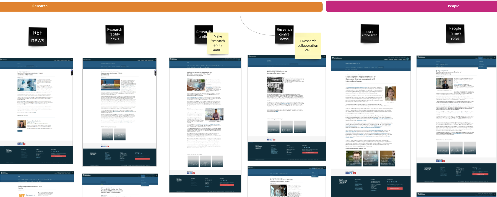
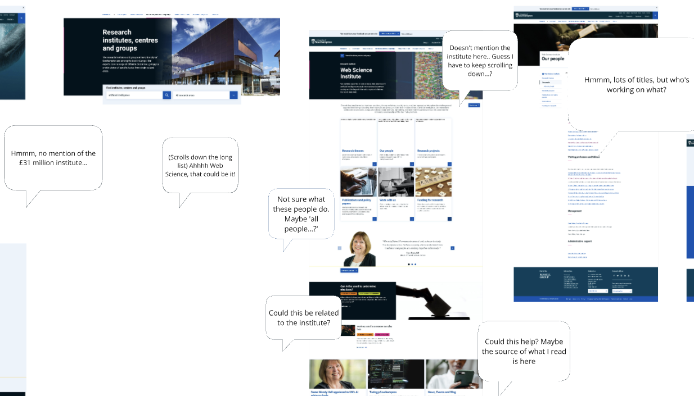

Identifying the content types and journeys where news would offer value
Summary: how I found ways to make news content more valuable
As a project's sole content designer, I uncovered how news could add value by auditing news content, analysing journey data and facilitating stakeholder workshops. I identified which objects news could usefully connect users with, and in which journeys. This informed prototypes for both the authoring and user experiences.
My approach
To identify where to place different types of news, I:
- conducted a news content audit to discover objects they might connect to
- mapped the subject domain and prioritised the organisation's objects
- asked an analyst to find where users look for priority objects
- recommended how news might focus in a new content type
How I learned what objects the organisation wants users to find
To understand the organisation's priorities for news, I co-chaired a workshop to ask stakeholders and also audited instances of news.
My fellow facilitators and I asked stakeholders about their motivations and goals for publishing news and helped to synthesise the findings. We learned their big priority: to publish news so that the University could connect with external people.
My content audit, meanwhile, uncovered types of objects or content types news instances mentioned. I started to narrow my focus to objects external people might be interested in.

How I discovered what objects news content failed to connect with
To gain a bigger understanding of objects news might connect with, I analysed instances of news in greater depth and asked an analyst for how they are found.
I analysed instances of news to find the opportunities. I found objects that were already content types such as research facilities that were not well connected with news. I also learned that some objects often represented in news, such as 'business collaborators' were not yet represented in our architecture or content types.
So I'd found opportunities for news to connect users with both existing and potential content types.
How I found where users look for objects represented in news
I asked an analyst to provide data on where users looked for objects appearing in news instances such as business collaborators.
The analyst found a large cohort of research group visitors were going to 3 or more of these collaborators, so potentially were looking for a specific one. My audit had revealed that some instances of news such as 'institute launches' mentioning business collaborators were potentially useful for these contact-searchers visiting research group pages. I recommended we develop a news taxonomy to connect these useful instances with the relevant content types.
The product manager agreed to connect news and research entities but said that a taxonomy must wait for the ‘beta’ phase.
The outcome
I had used data to develop a rationale for which content types to connect the news content type with, which the product manager accepted.
The product manager also saw the value in developing a taxonomy for news content, so that only instances of news valuable in those journeys are connected to the content types like 'research entities'. However, he said this would need to wait until the next, 'beta,' project phase.
The learning
I learned that data helps to identify how we can usefully connect objects in a system, which is something I would want to validate with user interviews. I also learned that it's important to define objects, attributes and relationships before testing new content types. They are part of journeys, now isolated pages.
